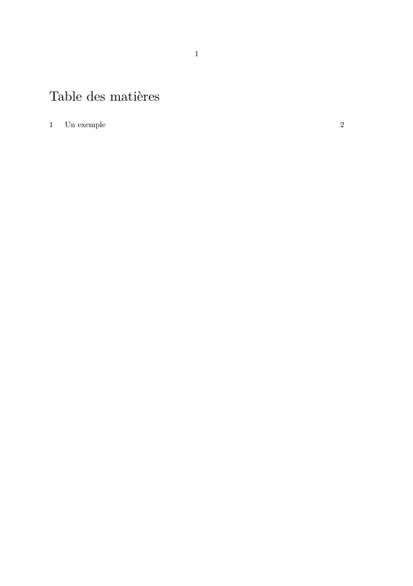
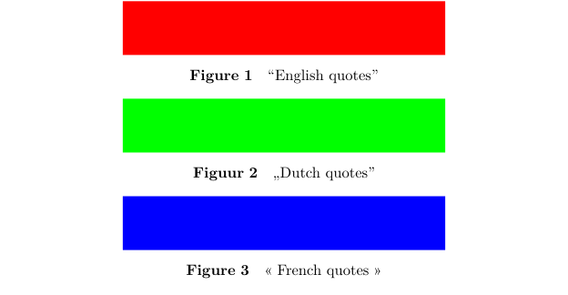
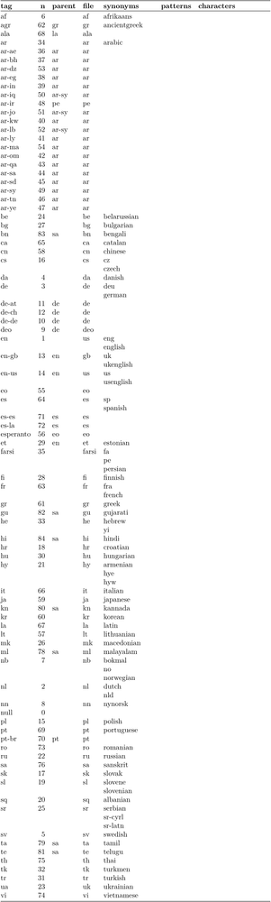

🚧 This page is currently being revised and reconstructed.
Its structure, examples, and explanations are being updated for current ConTeXt and LuaMetaTeX. Please feel free to edit, correct, or improve this page while the revision is in progress.
Languages in ConTeXt · Input and compilation · Languages · Mixed languages · Right-to-left and BiDi
Contents
-
1
Languages
- 1.1 1. A map of multilingual typesetting
- 1.2 2. Interface language and document language
- 1.3 3. Unicode, UTF-8, and writing systems
- 1.4 4. Language, script, and font are different
- 1.5 5. Multilingual typesetting requires knowledge of the language
- 1.6 6. Setting the main document language
- 1.7 7. Changing language locally
- 1.8 8. Main language and current language
- 1.9 9. What changes with \mainlanguage and \language?
- 1.10 10. Hyphenation is only part of language support
- 1.11 11. Writing direction and bidirectional text
- 1.12 12. Horizontal and vertical writing
- 1.13 13. Fonts, shaping, and combining marks
- 1.14 14. Punctuation, quotations, and spacing
- 1.15 15. Generated text
- 1.16 16. Sorting, indexes, and bibliographies
- 1.17 17. Scholarly texts: original script, transliteration, transcription, translation
- 1.18 18. Language tags
- 1.19 19. ConTeXt interface language
- 1.20 20. Language- and script-specific pages
- 1.21 21. Troubleshooting multilingual documents
- 1.22 22. Older encodings and regimes
- 1.23 23. A practical workflow
- 1.24 24. Mental map
- 1.25 25. Further reading
- 1.26 26. Related pages
ConTeXt provides extensive support for multilingual typesetting.
A document may have one main language, switch between several languages, combine several writing systems, and use left-to-right, right-to-left, or, where appropriate, vertical writing conventions.
This page is primarily an orientation and explanation page. It introduces the concepts needed to understand multilingual typesetting and directs the reader to more specialized pages for individual languages, scripts, fonts, writing directions, and typographical conventions.
Multilingualism in ConTeXt
ConTeXt is multilingual in two different senses.
First, the ConTeXt interface itself can be used in different languages. This is the language used for ConTeXt commands and interface terminology.
Second, the document being typeset can have one or several languages, independently of the language chosen for the ConTeXt interface.
For example, it is perfectly normal to:
write the ConTeXt source using the English interface
while
typesetting a French book containing
English, German, Ancient Greek, Arabic,
Hebrew, Urdu, Georgian, Chinese,
Japanese, or other languages
These two language levels should not be confused.
1. A map of multilingual typesetting
Multilingual typesetting involves several independent but related layers:
multilingual typesetting
|
+-------------------+-------------------+
| | |
INPUT LANGUAGE SCRIPT
| | |
UTF-8 \mainlanguage Latin
\language Greek
| | Cyrillic
| | Georgian
v v Arabic
Unicode text hyphenation Hebrew
quotations Devanagari
labels CJK
conventions |
v
FONT
|
v
glyph coverage
shaping
fallbacks
|
v
TYPOGRAPHY
|
+-------------+-------------+
| | |
direction line breaking punctuation
| | |
LTR/RTL script- language-
vertical specific specific
BiDi rules rules
These layers are related, but they are not interchangeable.
A useful rule is:
language
≠
script
≠
font
≠
writing direction
≠
typographical convention
2. Interface language and document language
Before configuring a document language, distinguish two concepts.
| What | What it controls | Example |
|---|---|---|
| ConTeXt interface language | The language used for ConTeXt commands and interface terminology | % interface=en
|
| Main document language | The principal linguistic context of the typeset document | \mainlanguage[fr]
|
| Current document language | A local or temporary language inside a multilingual document | \language[de]
|
Conceptually:
ConTeXt interface
|
+-- % interface=en
+-- % interface=fr
+-- % interface=de
+-- ...
typeset document
|
+-- main language
| \mainlanguage[fr]
|
+-- additional languages
\language[en]
\language[de]
\language[nl]
...
Interface language and document language are independent.
Changing the ConTeXt interface language does not change the language of the document.
Likewise, changing the document language with
\mainlanguage or \language does not change the
language of the ConTeXt command interface.
2.1 A minimal example
The interface language and the document language can be different.
In this example, ConTeXt commands use the English interface while the document language is French:
-
% interface=en \mainlanguage[fr] \starttext \completecontent \startchapter[title={Un exemple}] Ce document est composé en français. \stopchapter \stoptext
-

The source uses commands such as \starttext,
\completecontent, and \startchapter from the
English interface, while \mainlanguage[fr] establishes French
as the language of the document.
The two settings remain independent:
% interface=en
|
+-- language used for ConTeXt commands
\mainlanguage[fr]
|
+-- language of the typeset document
3. Unicode, UTF-8, and writing systems
Current ConTeXt normally uses UTF-8 source files.
UTF-8 allows characters from many writing systems to be represented directly in the source. A ConTeXt document may therefore contain, for example:
- Ancient Greek;
- Serbian in Cyrillic or Latin script;
- Georgian;
- Arabic;
- Urdu;
- Hebrew;
- languages written in Devanagari;
- Japanese;
- Korean;
- Classical Chinese;
- Chinese using traditional or simplified characters;
- many other Unicode writing systems.
However, UTF-8 is only the first layer:
UTF-8 input
|
v
Unicode characters
|
+-- language
+-- script
+-- suitable font
+-- writing direction
+-- shaping where required
+-- line-breaking rules
+-- typographical conventions
UTF-8 is not a font.
Being able to enter a Unicode character does not guarantee that the current font can display it.
Missing characters generally indicate that the selected font does not cover the required Unicode range, or that an appropriate font fallback has not been configured.
4. Language, script, and font are different
A language does not necessarily correspond to exactly one script.
Likewise, one script can be used by several different languages.
The following table gives typical examples. The font families are suggested starting points, not requirements.
| Language | Script or scripts | Important consideration | Suggested font families |
|---|---|---|---|
| Ancient Greek | Greek | Polytonic Greek coverage may be required | Gentium Plus; Noto Serif |
| Serbian | Cyrillic or Latin | One language can use more than one script | Noto Serif; Noto Sans |
| Georgian | Georgian | A font with Georgian coverage is required | Noto Serif Georgian; Noto Sans Georgian |
| Arabic | Arabic | Right-to-left direction and contextual shaping | Noto Naskh Arabic; Noto Sans Arabic |
| Urdu | Arabic-derived script | Right-to-left direction, shaping, and Urdu-specific typographical traditions | Noto Nastaliq Urdu; Noto Naskh Arabic |
| Hebrew | Hebrew | Right-to-left direction; vocalization may use combining marks | Noto Serif Hebrew; Noto Sans Hebrew |
| Hindi, Sanskrit, Marathi, Nepali | Devanagari | Complex-script shaping and correct positioning of vowel signs and combining marks | Noto Serif Devanagari; Noto Sans Devanagari |
| Japanese | Kanji, hiragana, katakana | CJK line breaking; horizontal or vertical layout | Noto Serif CJK JP; Noto Sans CJK JP |
| Korean | Hangul, with historical use of Hanja | Usually horizontal today; vertical layout is historically possible | Noto Serif CJK KR; Noto Sans CJK KR |
| Chinese | Han characters | Traditional or simplified repertoire; horizontal or vertical layout | Noto Serif CJK SC/TC; Noto Sans CJK SC/TC |
4.1 CJK regional font variants
CJK fonts may contain regional variants appropriate to different typographical traditions.
For example, the Noto CJK families distinguish:
SC Simplified Chinese TC Traditional Chinese JP Japanese KR Korean
The appropriate CJK font should therefore be chosen for the language and regional glyph conventions of the document.
A single Unicode character may have different conventional glyph forms in Chinese, Japanese, or Korean typography.
4.2 One language may use several scripts
Serbian provides a simple example:
Serbian | +-- Cyrillic | +-- Latin
The language is the same, but the script and therefore potentially the font configuration differ.
4.3 One script may serve several languages
The inverse is also true:
Arabic script
|
+-- Arabic
+-- Persian
+-- Urdu
+-- ...
Cyrillic script
|
+-- Russian
+-- Serbian
+-- Bulgarian
+-- ...
Devanagari
|
+-- Hindi
+-- Sanskrit
+-- Marathi
+-- Nepali
+-- ...
Using the same script does not imply identical orthographic or typographical rules.
Choosing and installing fonts
The font families in the table above are examples, not requirements. Many other OpenType fonts can be used provided that they contain the required characters and support the necessary script features.
See:
- Fonts — overview of font handling in ConTeXt;
- Use the fonts you want — using fonts installed on the system or added to a ConTeXt installation;
- fonts for non-Roman languages — French Wikibooks introduction to fonts for Greek, Arabic, Cyrillic, and CJK.
A font recommendation belongs primarily to the script level, not directly to the language level. The same font may support several languages, while one language may require different fonts when written in different scripts.
5. Multilingual typesetting requires knowledge of the language
ConTeXt provides mechanisms; the author or editor provides linguistic knowledge.
Correct multilingual typesetting requires knowledge of the writing and typographical conventions of the language being typeset.
For example:
- Arabic and Hebrew are normally written from right to left;
- mixed Arabic, Hebrew, and Latin material may require bidirectional typesetting;
- French has particular punctuation and spacing conventions;
- Ancient Greek may require polytonic accents and combining marks;
- Chinese and Japanese use script-specific punctuation and line-breaking rules;
- Japanese can be typeset horizontally or vertically;
- Chinese can also use traditional vertical composition;
- Urdu uses an Arabic-derived script but has its own typographical traditions;
- Devanagari requires correct shaping and placement of dependent vowel signs and combining marks;
- Serbian can be written using either Cyrillic or Latin script.
ConTeXt can provide mechanisms for implementing such conventions, but it cannot determine the correct editorial convention merely from the presence of Unicode characters.
A useful mental model is:
Unicode support
+
appropriate fonts
+
correct language settings
+
correct script processing
+
knowledge of the language's conventions
=
reliable multilingual typesetting
6. Setting the main document language
Use \mainlanguage to establish the principal language of a document:
\mainlanguage[fr] \starttext Un document en français. \stoptext
The main language provides the principal linguistic context for mechanisms such as:
- hyphenation;
- generated labels;
- quotation conventions;
- language-dependent text;
- other mechanisms that consult the language setup.
The exact typographical behaviour available for a language depends on the mechanism involved.
Setting \mainlanguage should therefore not be understood as
automatically applying every editorial convention of that language.
7. Changing language locally
Use \language when part of a document uses another language.
For example:
\mainlanguage[en] \starttext This paragraph is in English. \start \language[fr] Ce paragraphe est en français. \stop This paragraph is in English again. \stoptext
This is especially useful for:
- quotations;
- multilingual books;
- parallel texts;
- critical editions;
- linguistic examples;
- dictionaries;
- scholarly discussions containing original-language passages.
See also Mixed languages.
8. Main language and current language
ConTeXt distinguishes the main language of the document from the language currently active at a particular point.
The corresponding macros are:
\currentmainlanguage \currentlanguage
For example:
\mainlanguage[en] \starttext Main language: \currentmainlanguage Current language: \currentlanguage \start \language[nl] Main language: \currentmainlanguage Current language: \currentlanguage \stop \stoptext
Conceptually:
\mainlanguage[en] \currentmainlanguage -> en \currentlanguage -> en \language[nl] \currentmainlanguage -> en \currentlanguage -> nl
This distinction is useful in multilingual styles and environments that adapt their behaviour to the active language.
9. What changes with \mainlanguage and \language?
The following example is retained from the earlier version of this page.
-
\startplacefigure[title=\quotation{English quotes}] \midaligned{\blackrule[width=6cm,height=1cm,color=red]} \stopplacefigure \start \mainlanguage[nl] \startplacefigure[title=\quotation{Dutch quotes}] \midaligned{\blackrule[width=6cm,height=1cm,color=green]} \stopplacefigure \stop \start \language[fr] \startplacefigure[title=\quotation{French quotes}] \midaligned{\blackrule[width=6cm,height=1cm,color=blue]} \stopplacefigure \stop
-

The example illustrates an important distinction:
\mainlanguage[nl]
|
+-- changes the main linguistic context
+-- affects generated language-dependent labels
+-- affects language-sensitive commands
\language[fr]
|
+-- changes the current language
+-- does not replace the main document language
For a document that uses only one language, \mainlanguage is normally sufficient.
Use \language when another language must become active locally.
10. Hyphenation is only part of language support
Language support in TeX is often introduced primarily through hyphenation.
Hyphenation remains important, but multilingual typesetting involves much more than dividing words at line endings.
For languages that use spaces between words:
line breaking
|
+-- word boundaries
+-- spaces
+-- hyphenation
For some other writing systems:
line breaking
|
+-- character boundaries
+-- punctuation restrictions
+-- script-specific rules
This distinction is particularly important in Chinese and Japanese typography.
See also Hyphenation.
11. Writing direction and bidirectional text
Writing direction is another property distinct from language.
| Direction | Typical examples |
|---|---|
| left to right | Latin, Greek, Cyrillic, Georgian, Devanagari |
| right to left | Arabic, Hebrew, Urdu |
| horizontal CJK | modern Chinese, Japanese, and Korean |
| vertical | traditional and some modern Japanese and Chinese typography; historical Korean typography |
11.1 Right-to-left text
Arabic, Hebrew, Urdu, and other languages using right-to-left scripts require appropriate direction handling.
See:
11.2 Bidirectional text
A right-to-left paragraph often contains material that follows another direction, such as:
- Western numbers;
- Latin names;
- bibliographical references;
- mathematical expressions;
- URLs;
- quotations in another language.
This is a bidirectional, or BiDi, problem rather than merely a right-to-left problem.
Conceptually:
Arabic / Hebrew paragraph
|
+-- RTL text
+-- LTR numbers
+-- LTR names
+-- URLs
+-- references
|
v
BiDi processing
12. Horizontal and vertical writing
Language does not always determine a unique writing direction.
Modern Korean, Japanese, and Chinese are commonly typeset horizontally from left to right.
Japanese and Chinese can also use traditional vertical composition:
characters in a column
|
v
top to bottom
columns progress
right to left
Vertical Japanese remains part of normal contemporary typography in such contexts as literature, newspapers, and manga.
Traditional vertical Chinese also remains relevant in literary, calligraphic, historical, and some contemporary publishing contexts.
Korean historically used vertical composition as well, although horizontal left-to-right typesetting predominates today.
Do not confuse language, character repertoire, and direction.
For example:
Classical Chinese
≠
traditional Chinese characters
≠
vertical Chinese typesetting
These describe different aspects of a text.
13. Fonts, shaping, and combining marks
Correct multilingual output requires more than locating a glyph in a font.
13.1 Font coverage
A multilingual document may require several fonts or font fallbacks:
main text font
|
+-- Latin coverage
+-- Greek fallback
+-- Cyrillic fallback
+-- Georgian fallback
+-- Hebrew fallback
+-- Arabic fallback
+-- Devanagari fallback
+-- CJK fallback
+-- ...
13.2 Script shaping
Some writing systems require contextual processing of Unicode characters.
This can include:
- contextual glyph forms;
- ligatures;
- positioning of marks;
- reordering of marks or signs;
- script-specific OpenType processing.
Arabic-script languages and Devanagari provide obvious examples.
Conceptually:
Unicode characters
|
v
script / OpenType processing
|
v
positioned and shaped glyphs
The character stored in the source is therefore not necessarily identical to the final glyph form visible on the page.
13.3 Combining marks
Some languages make extensive use of characters constructed from a base character plus one or several combining marks.
This is relevant, for example, to:
- polytonic Greek;
- vocalized Hebrew;
- vocalized Arabic;
- Devanagari;
- Vietnamese;
- many other writing systems.
Correct rendering depends on both Unicode data and appropriate font and shaping support.
14. Punctuation, quotations, and spacing
Punctuation conventions are language-dependent.
Examples include:
- French spacing around some punctuation marks;
- different quotation-mark conventions;
- Arabic punctuation;
- CJK punctuation and line-breaking restrictions;
- language-specific use of dashes and quotation marks.
Semantic commands such as:
\quotation{...}
are preferable to hard-coding quotation characters when the desired output should follow the active language setup.
15. Generated text
One important role of the main document language is to provide a linguistic context for automatically generated document elements.
Depending on the mechanism, these may include labels such as:
Contents Chapter Figure Table Appendix ...
This is one reason why \mainlanguage and \language are not identical:
main language
|
+-- document-level linguistic context
+-- generated language-dependent text
current language
|
+-- local linguistic context
16. Sorting, indexes, and bibliographies
Displaying Unicode characters and sorting them are different problems.
For example:
Unicode code-point order
≠
linguistic collation order
This matters for:
- indexes and registers;
- bibliographies;
- lists of names;
- dictionaries;
- multilingual catalogues.
The desired sorting order may depend on language, transliteration rules, or editorial convention.
Correct visual rendering does not automatically imply correct linguistic sorting.
17. Scholarly texts: original script, transliteration, transcription, translation
Scholarly documents often require several representations of the same material.
These should remain conceptually distinct:
original script
≠
transliteration
≠
transcription
≠
translation
For example:
Ἀριστοτέλης Aristotelēs Aristotle
ConTeXt can typeset these forms together, but deciding which transliteration or transcription system is appropriate is an editorial decision, not an automatic consequence of the language setup.
18. Language tags
ConTeXt uses language tags such as:
en fr de nl ...
These tags are supplied to commands such as:
\mainlanguage[fr] \language[de]
To display the languages installed and known to the current ConTeXt installation, the existing example can be used:
-
\usemodule[languages-system] \loadinstalledlanguages \showinstalledlanguages
-

For the full language system and additional details, see the official Languages manual.
A language tag is not a script tag.
Selecting a document language does not by itself select every font, writing direction, or script-specific typographical mechanism that the document may require.
19. ConTeXt interface language
ConTeXt itself has a multilingual command interface.
The interface language can be specified at the beginning of a source file, for example:
% interface=en
or:
% interface=fr
This affects the ConTeXt command interface, not the language of the document being typeset.
Quick-reference documents are available for several interfaces:
-
% interface=en— English commands ;
-
% interface=nl— Dutch commands ;
-
% interface=de— German commands ;
-
% interface=cz— Czech commands ;
-
% interface=fr— French commands ;
-
% interface=it— Italian commands ;
-
% interface=ro— Romanian commands .
20. Language- and script-specific pages
The following pages address more specialized linguistic or script-related questions.
20.1 Direction and complex writing systems
- Right-to-left RTL — right-to-left and bidirectional texts;
20.2 Language-specific typography
20.3 Mixed-language documents
These pages should be read as complements to this orientation page.
The correct treatment of a particular language may involve:
language settings
+
font selection
+
script processing
+
writing direction
+
language-specific typography
21. Troubleshooting multilingual documents
A visible problem does not always come from the language setting itself.
| Symptom | First thing to investigate |
|---|---|
| missing character or square box | font coverage or fallback |
| Arabic letters appear incorrectly shaped | font and script shaping |
| Devanagari vowel signs or marks are misplaced | font and complex-script shaping |
| Arabic or Hebrew text runs in the wrong direction | direction and BiDi setup |
| incorrect word hyphenation | current language and hyphenation patterns |
| generated label appears in the wrong language | main language |
| quotation marks are inappropriate | current language and quotation setup |
| CJK punctuation breaks badly at line boundaries | script-specific line-breaking setup |
| index or bibliography sorts unexpectedly | collation or sorting rules |
| combining accents are poorly positioned | font support and mark positioning |
22. Older encodings and regimes
Modern ConTeXt documents normally use UTF-8.
Older ConTeXt documentation contains mechanisms for legacy input encodings, accent constructions, and regimes that are no longer the normal starting point for current LMTX documents.
These pages are preserved for historical purposes:
- Encodings and Regimes - Old Content ;
- Second Step — includes an older German-language example.
Historical material
Do not introduce legacy encoding or regime machinery into a new LMTX document merely because an older example uses it.
Start with UTF-8 and current font and language mechanisms.
23. A practical workflow
When preparing a document in a language or script that is new to you, a useful workflow is:
identify the language
|
v
identify the script
|
v
choose suitable fonts
|
v
set the document language
|
v
check writing direction
|
v
check shaping and combining marks
|
v
check line breaking
|
v
check punctuation and spacing
|
v
check sorting / bibliography if needed
|
v
verify against the language's
typographical conventions
This separates technical configuration from linguistic and editorial decisions.
24. Mental map
ConTeXt
|
+------------------+------------------+
| |
interface language document languages
| |
% interface=en \mainlanguage[fr]
% interface=fr |
% interface=de +---------+---------+
| | |
\language \language \language
[en] [de] [ar]
|
v
current language
|
+-----------------------------+----------------------+
| | |
hyphenation typography script
quotations punctuation |
labels spacing |
conventions line breaking v
font + shaping
|
v
final glyphs
A more general summary is:
MULTILINGUAL DOCUMENT
|
+-------------------------+--------------------------+
| | |
LANGUAGE SCRIPT FONT
| | |
v v v
linguistic rules writing system glyph coverage
hyphenation direction shaping
quotations combining marks fallbacks
generated text line breaking
| | |
+-------------------------+--------------------------+
|
v
EDITORIAL KNOWLEDGE
|
orthography and punctuation
quotation conventions
vertical / horizontal usage
transliteration conventions
scholarly conventions
25. Further reading
- Languages in ConTeXt — official PRAGMA manual;
- Bidirectional typesetting — official PRAGMA documentation;
- fonts for non-Roman languages — French Wikibooks;
See also:
26. Related pages
- Input and compilation
- Mixed languages
- Right-to-left RTL
- Arabic and Hebrew
- Chinese, Japanese and Korean
- French
- Greek
- Indic scripts
- Hyphenation
- Fonts
- Use the fonts you want
Languages in ConTeXt · Input and compilation · Languages · Mixed languages · Right-to-left and BiDi